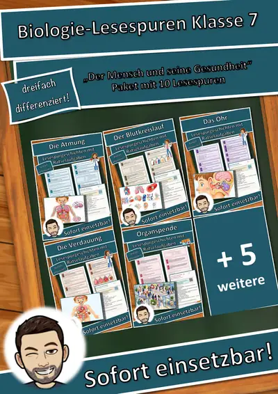
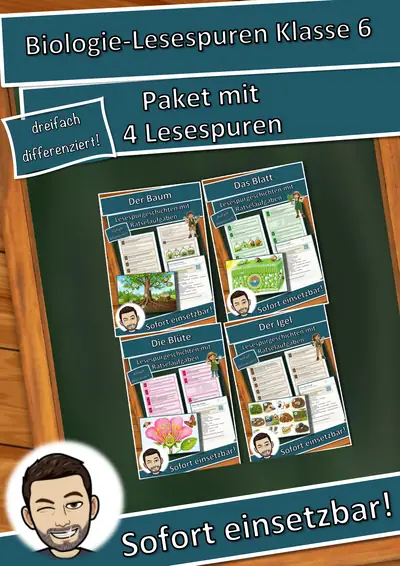
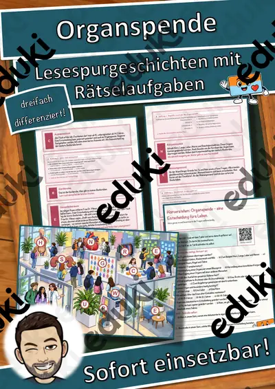
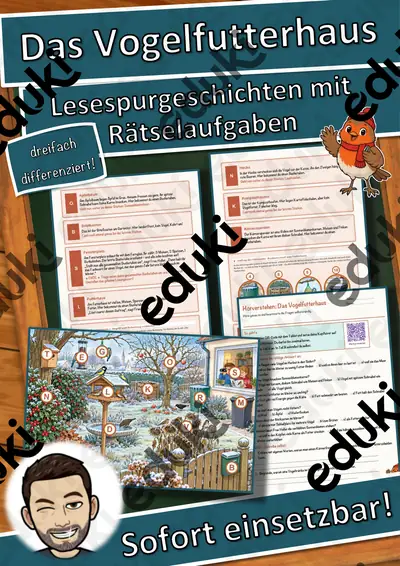
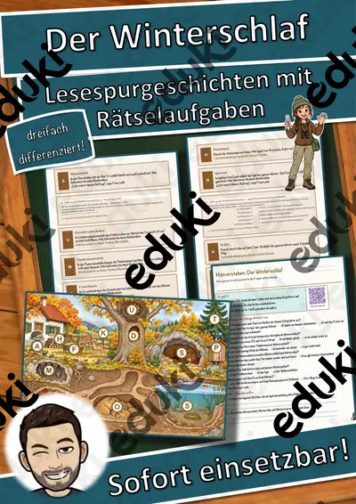
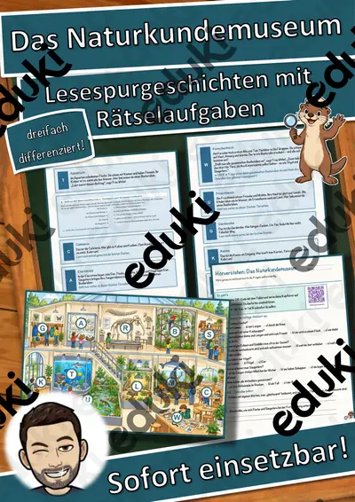
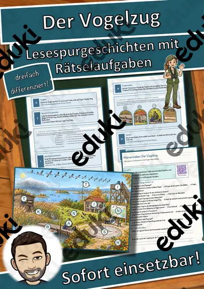

Materialpaket Lesespurgeschichten Biologie Klasse 8 – Pflanzen und Pilze: 12 Lesespuren mit Rätselaufgaben, dreifach differenziert

Materialpaket Lesespurgeschichten Biologie Klasse 8 – Tiere: Säugetiere und Vögel: 19 Lesespuren mit Rätselaufgaben, dreifach differenziert

Materialpaket Lesespurgeschichten Biologie Klasse 8 – Der Mensch: 18 Lesespuren mit Rätselaufgaben, dreifach differenziert

Materialpaket Lesespurgeschichten Biologie Klasse 7 – Der Mensch und seine Gesundheit: 10 Lesespuren mit Rätselaufgaben, dreifach differenziert

Materialpaket Lesespurgeschichten Biologie Klasse 7 – Tiere und Lebensräume: 7 Lesespuren mit Rätselaufgaben, dreifach differenziert

Materialpaket Lesespurgeschichten Biologie Klasse 6: 4 Lesespuren mit Rätselaufgaben, dreifach differenziert

Materialpaket Lesespurgeschichten Biologie Klasse 5 – Tiere: 17 Lesespuren mit Rätselaufgaben, dreifach differenziert

Materialpaket Lesespurgeschichten Biologie Klasse 5 – Pflanzen, Lebensräume und Sinne: 8 Lesespuren mit Rätselaufgaben, dreifach differenziert

Materialpaket Lesespurgeschichten Biologie Klasse 8 – Lebensräume und Ökologie: 11 Lesespuren mit Rätselaufgaben, dreifach differenziert

Materialpaket Lesespurgeschichten Biologie Klasse 8 – Zellen und Bakterien: 5 Lesespuren mit Rätselaufgaben, dreifach differenziert

Materialpaket Advent für die 5. Klasse: 3 Lesespurgeschichten mit Rätselaufgaben (Weihnachtsstern, Plätzchen backen, Handnähen)

Materialpaket Winter und Advent für die 7. Klasse: 10 Lesespurgeschichten mit Rätselaufgaben fächerübergreifend (Weihnachtsoratorium, Südpol, Eishockey & mehr)

Lesespur: Der Hund: unser treues Haustier – Lesespurgeschichte mit Rätseln (Klasse 5)

Lesespur: Die Christrose: eine Blume blüht im Schnee – Lesespurgeschichte mit Rätseln (Klasse 6)

Lesespur: Der Weihnachtsstern: eine Pflanze aus Mexiko – Lesespurgeschichte mit Rätseln (Klasse 5)

Lesespur: Kaninchen und Meerschweinchen artgerecht halten – Lesespurgeschichte mit Rätseln (Klasse 5)

Lesespur: Winterblues: warum uns im Winter das Licht fehlt – Lesespurgeschichte mit Rätseln (Klasse 8)

Lesespur: Erste Hilfe bei Kälte: Unterkühlung und Erfrierungen – Lesespurgeschichte mit Rätseln (Klasse 8)

Lesespur: Gentechnik: Chancen und Risiken abwägen – Lesespurgeschichte mit Rätseln (Klasse 10)

Lesespur: Rauchen und Vapes: warum Nikotin abhängig macht – Lesespurgeschichte mit Rätseln (Klasse 7)

Lesespur: Organspende: eine Entscheidung fürs Leben – Lesespurgeschichte mit Rätseln (Klasse 7)

Lesespur: Das Vogelfutterhaus – Lesespurgeschichte mit Rätseln (Klasse 5)

Lesespur: Der Winterschlaf – Lesespurgeschichte mit Rätseln (Klasse 7)

Lesespur: Das Naturkundemuseum – Lesespurgeschichte mit Rätseln (Klasse 5)

Lesespur: Der Vogelzug – Lesespurgeschichte mit Rätseln (Klasse 7)

Lesespur: Die Kastanie – Lesespurgeschichte mit Rätseln (Klasse 5)

Lesespur: Die Kieme – Lesespurgeschichte mit Rätseln (Klasse 8)

Lesespur: Der Muskel – Lesespurgeschichte mit Rätseln (Klasse 8)

Lesespur: Die DNA – Lesespurgeschichte mit Rätseln (Klasse 9)

Lesespur: Der Zellkern – Lesespurgeschichte mit Rätseln (Klasse 9)
Keine Materialien gefunden – versuch einen anderen Suchbegriff oder Filter.
Wie die Biologie-Materialien aufgebaut sind
Biologie lebt von Fachbegriffen, und die bleiben vor allem dann hängen, wenn Kinder sie selbst in einen Zusammenhang einsetzen müssen. Darauf sind die meisten Materialien dieser Seite gebaut: Ein kurzer Sachtext wird zum Lückentext mit Wortspeicher, ergänzt durch eine Hörfassung per QR-Code und ein Suchsel. Gelesen, gehört, eingetragen und mit der Musterlösung kontrolliert, das passt in eine Schulstunde und lässt sich ohne lange Vorbereitung einsetzen.
Inhaltlich decken die Themen die Bereiche ab, die in den Lehrplänen der Länder immer wiederkehren: Tiere und Pflanzen, der menschliche Körper, Jahreszeiten und Lebensräume, Gesundheit und Vererbung.
Klasse 5 bis 7: Tiere, Pflanzen und Jahreszeiten
Hier liegt der größte Teil des Angebots. Klassische Einzelthemen wie „Der Igel“, „Das Blatt“, „Die Blüte“ und „Der Baum“ stehen neben „Der Hund“ oder „Das Vogelfutterhaus“. Jahreszeitliche Themen wie „Der Winterschlaf“ und „Der Vogelzug“ eignen sich als Einstieg in eine Einheit über Anpassung. In Klasse 7 reicht das Spektrum bis in die Gesundheitsbildung: „Organspende“ und „Rauchen und Vapes“ liefern Stoff für ein Gespräch, das über das Ausfüllen der Lücken hinausgeht.
Klasse 8 bis 10: Körper, Zelle und Genetik
Ab Klasse 8 wird die Anatomie genauer: „Die Kieme“, „Der Muskel“ und „Das Vogelei“ zeigen, wie Körperbau und Funktion zusammenhängen. In Klasse 9 folgen „Die DNA“, „Der Zellkern“, „Das Mitochondrium“ und „Das Rückenmark“, für Klasse 10 steht „Gentechnik“ bereit. Dieser Bereich ist deutlich kleiner als die Mittelstufe; wer ein Thema nicht findet, probiert die Suche oder den Klassenfilter.
Für die Grundschule gibt es einzelne Steckbriefe, zum Beispiel „Steckbriefe Meerestiere“ und „Steckbriefe Vögel im Winter“. Weitere Fächer und Stufen findest du über die gesamte Materialsuche.
Häufige Fragen
Für welche Klassen gibt es die meisten Biologie-Materialien?
Für die Klassen 5 bis 7. In den Klassen 8 bis 10 ist die Auswahl kleiner, dafür gibt es dort neben Lückentexten auch Lesespuren und Prüfungstrainings.
Helfen die Lückentexte auch Kindern, die ungern lesen?
Der Wortspeicher gibt Halt, und die Hörfassung per QR-Code lässt den Text zusätzlich vorlesen. So lässt sich dasselbe Material in gemischten Gruppen einsetzen.
Ersetzen die Materialien das Biologiebuch?
Nein. Sie erklären ihr Thema im Text selbst, ergänzen aber ein Lehrwerk, statt es zu ersetzen. Besonders gut passen sie zur Sicherung am Ende einer Einheit.
Sind Lösungen enthalten?
Ja, zu jedem Material gehört eine Musterlösung, mit der sich die Lücken und das Suchsel schnell prüfen lassen.